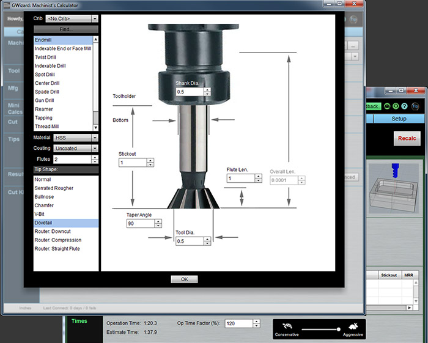
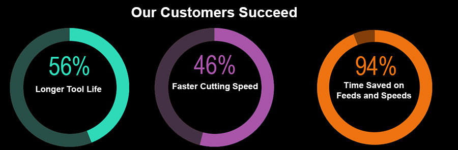
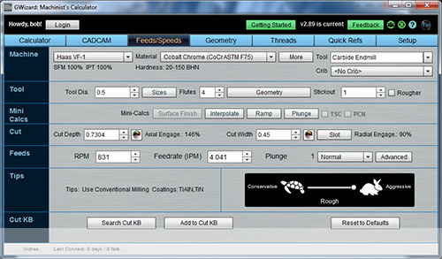
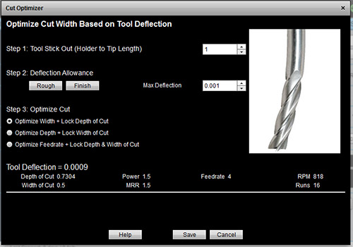
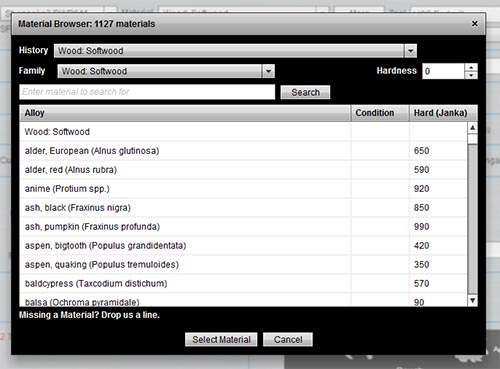
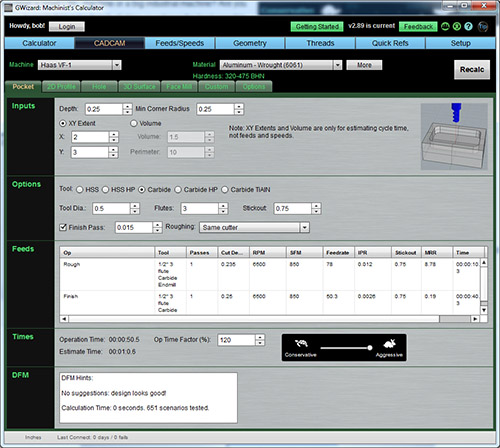
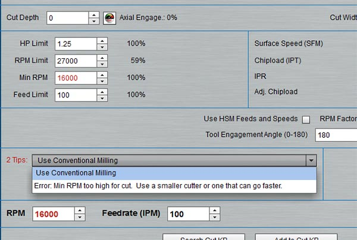
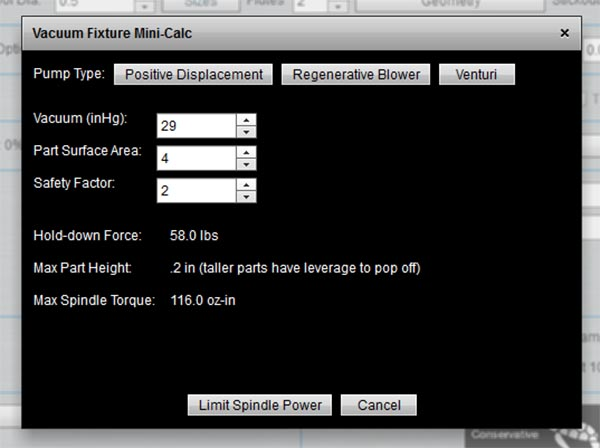
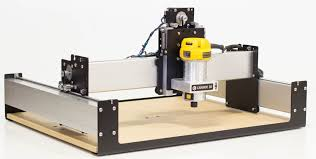

|
| |||||||||||
G-Wizard CNC Router
Feeds and Speeds Calculator
It took years, we analyzed data from over 250 tooling catalogs,
we built a powerful cutting physics engine with advanced algorithms
that consider almost 60 different variables,
and we worked with over 50,000 CNC'ers
like yourself to build the world's first
CNC Router Feeds and Speeds Calculator
Better Tool Life, Surface Finish, and MRR with G-Wizard

Master your CNC Router Speeds and Feeds
the easy way with G-Wizard.
"I've been asking for this for 30 years from the CAM guys. This program is the 'go-to' source for feeds and speeds" Ed


How much do you spend on cutters in a year? If each one lasted 56% longer, you'd save 56% of that. Plus what's the value of your time saved and time saved on jobs?
G-Wizard pays for itself very quickly--you'll see in the 30-day Free Trial.
G-Wizard Speeds and Feeds Calculator
CNC Router Features:
|
Get Speeds and Feeds in seconds Getting good Speeds and Feeds is quick and easy: Fill in the blanks left to right, top to bottom and |
 |
|  |
Figure the Best Cut Width and Cut Depth How do you know when you've got the best Cut Depth and Cut Width? These two parameters matter more than almost any other for best Speeds and Feeds. G-Wizard will find the best combination to keep tool deflection under control while maximizing Material Removal Rate. No other software can. |
|
Feeds and Speeds for Wood G-Wizard has over 1000 materials in its Materials Database, including hundreds of species of wood. It individually adjusts feeds and speeds for each wood species you select to get the best results. |
 |
 |
Tool Types Especially for CNC Routers G-Wizard handles more tool types than other software can. Best of all, it has built-in support for the special cutter bits common to CNC Routers such as Downcut, Compression, and Straight Flute cutters. |
|
Adjusts to Your Needs Are you looking to maximize tool life or material removal rates? Do you have a small CNC machine or a big industrial machine? Are you trying to hog out a bunch of chips or achieve the best possible surface finish? G-Wizard makes it easy to dial in
exactly |
|  |
CADCAM Wizards: An Expert in the Box How often do you get to experiment with hundreds of different feed and speed combinations to find the best one for your job? CADCAM Wizards will do that for you automatically in a matter of seconds and without asking too many questions. It's like having a machining expert sitting at your shoulder telling you the right combination for the win--another G-Wizard first! |
|
Get Expert Advice on Every Cut G-Wizard Calculator includes a unique "Tips" window that offers expert tips tuned to the unique cutting situation you're figuring feeds and speeds on. Wondering whether to climb or conventional mill? Wonder what to do if your spindle won't go slow enough for the recommended spindle speed? All that and much more is covered by the Tips Expert. |
 |
 |
Stop Part Pop Off from Vacuum Tables If you use a vacuum table you know what a pain it is when your parts pop off the table. G-Wizard has the ability to provide feeds and speeds that limit cutting forces based on your part so it won't pop off. Quit scrapping parts because they pop off your vacuum table! |
|
G-Wizard Can Adjust to Your Smaller CNC Router G-Wizard Calculator has machine profiles for the Carbide3D Nomad and Shapeoko already built-in. You can modify |
 |
G-Wizard works for Mills, Lathes, and Routers.
"I'm in my 27th year and seen my share of 'machinist aid' software and this BY FAR packs the most punch for the dollar. Shop owners would be fools not having a copy." Michael
"I'm a total Newbie on hobby mill and had the crazy idea to jump right in on some plasma cut hardened steel. WOW! I did it and could not have done it without G-Wizard. I completed our very first EVER customer part in about 1 hour." Jeffrey
"I am amazed at all the data that is available when using the G-Wizard. I've been in the business for 43 years and sure wish something like this was around back in the day." Michael
See what else people are saying about G-Wizard